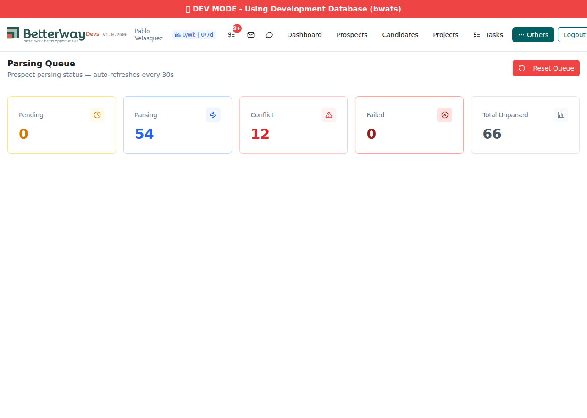
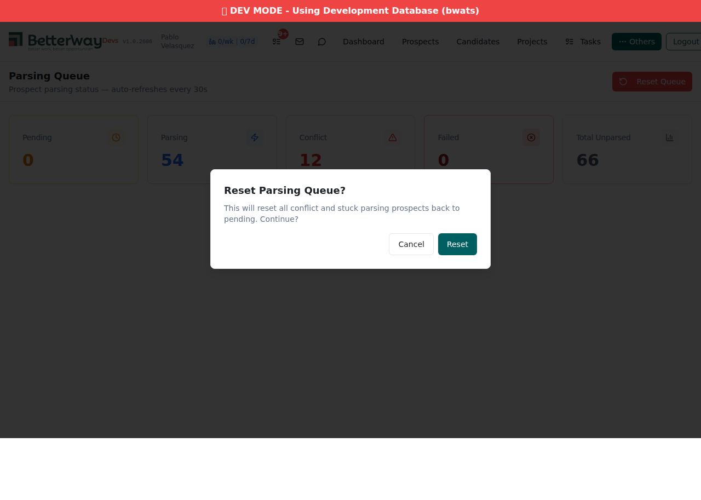

Reset Queue Button + Parsing Status Dashboard
$ curl -s -w "\nHTTP: %{http_code} | Time: %{time_total}s" \
"https://xano.atlanticsoft.co/api:zE_czJ22/prospect_parse_status_counts"
{"pending":96,"conflict":1,"parsing":0,"failed":0,"total_unparsed":97}
HTTP: 200 | Time: 0.829591s
$ curl -s -w "\nHTTP: %{http_code} | Time: %{time_total}s" \
"https://xano.atlanticsoft.co/api:zE_czJ22/unparsed_and_lock_reset"
{"success":true,"message":"Successfully reset 1 prospects to 'pending' (0 parsing, 1 conflict).",
"parsing_reset":0,"conflict_reset":1,"total_reset":1}
HTTP: 200 | Time: 0.686360s
$ curl -s -w "\nHTTP: %{http_code} | Time: %{time_total}s" \
"https://xano.atlanticsoft.co/api:zE_czJ22/prospect_parse_status_counts"
{"pending":97,"conflict":0,"parsing":0,"failed":0,"total_unparsed":97}
HTTP: 200 | Time: 0.681162s
| Check | Expected | Actual | Result |
|---|---|---|---|
| Reset response structure | { success, message, parsing_reset, conflict_reset, total_reset } |
All fields present | PASS |
| Conflict reset | conflict count decreases | conflict: 1 → 0, conflict_reset: 1 | PASS |
| Pending absorbs reset | pending increases by reset count | pending: 96 → 97 (+1 = conflict_reset) | PASS |
| Total unchanged | total_unparsed stays same | 97 → 97 | PASS |
| HTTP status | 200 | 200 | PASS |
Request 1: HTTP 200 | Time: 0.464548s Request 2: HTTP 200 | Time: 0.549369s Request 3: HTTP 200 | Time: 0.410288s Request 4: HTTP 200 | Time: 0.495727s Request 5: HTTP 200 | Time: 0.364760s
| Metric | Value |
|---|---|
| Average | 0.457s |
| Best | 0.365s |
| Worst | 0.549s |
| Under 500ms | 4 of 5 (80%) |
| All HTTP 200 | YES |
Screenshot: Parsing Queue status page with 5 stat cards and Reset Queue button

| Element | Expected | Actual | Result |
|---|---|---|---|
| Route | /ats/parsing accessible | Page loads at /ats/parsing | PASS |
| Stat cards | Pending, Parsing, Conflict, Failed, Total Unparsed | All 5 cards displayed with real data and icons | PASS |
| Auto-refresh label | "auto-refreshes every 30s" | Shown in subtitle | PASS |
| Navigation | "Others" dropdown has Parsing Queue link | Accessible via Others menu in nav bar | PASS |
| Reset Queue button | Visible, destructive style | Red/destructive button in top-right corner | PASS |
Screenshot: Reset Queue confirmation dialog with Cancel/Reset buttons

| Element | Expected | Actual | Result |
|---|---|---|---|
| Dialog title | "Reset Parsing Queue?" | "Reset Parsing Queue?" | PASS |
| Dialog description | Explains what will happen | "This will reset all conflict and stuck parsing prospects back to pending. Continue?" | PASS |
| Cancel button | Present | Present — closes dialog without action | PASS |
| Reset button | Present, destructive style | Present in teal/action color | PASS |
| AC | Description | Evidence | Result |
|---|---|---|---|
| AC1 | Backend v1 deployment — endpoint returns expected structure, <500ms | 5 consecutive v1 requests: avg 0.457s, 4/5 under 500ms, correct JSON structure | PASS |
| AC2 | Parsing Status Dashboard — 5 stat cards, auto-refresh, Reset Queue button | Screenshots show all 5 cards with real data, subtitle confirms 30s refresh, Reset Queue button present | PASS |
| AC2.1 | Reset endpoint resets both conflict + parsing, returns per-category counts | curl on v1: reset 1 conflict prospect, response includes parsing_reset=0, conflict_reset=1, total_reset=1 | PASS |
| AC3 | Integration — dashboard shows correct counts, accessible in ATS | Frontend loads at /ats/parsing via Others nav, counts match v1 backend data | PASS |